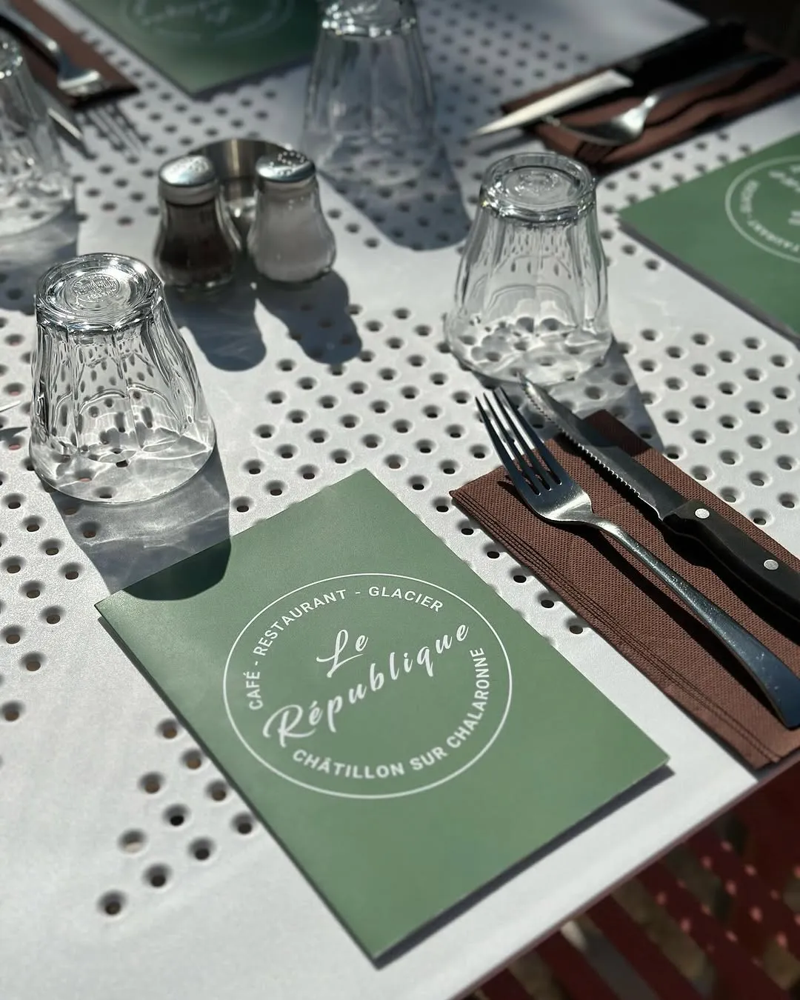
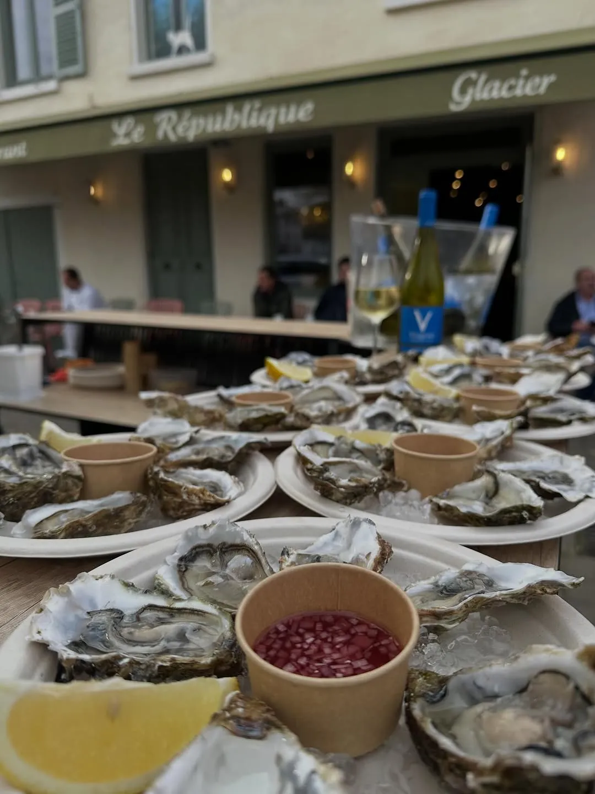
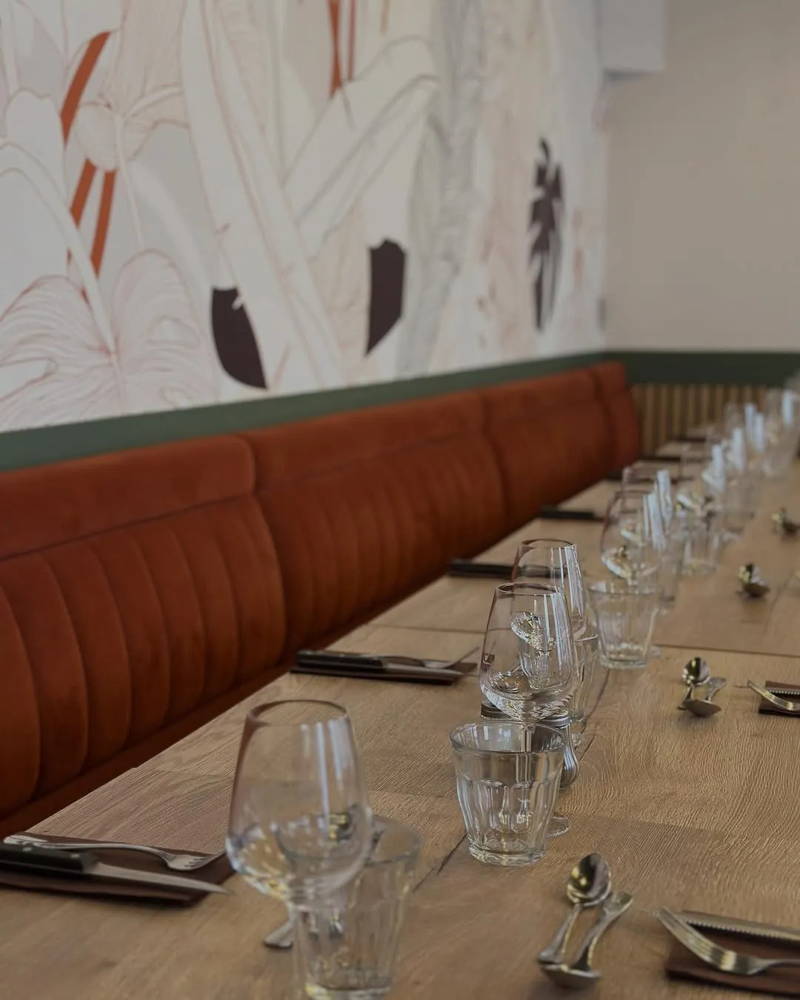
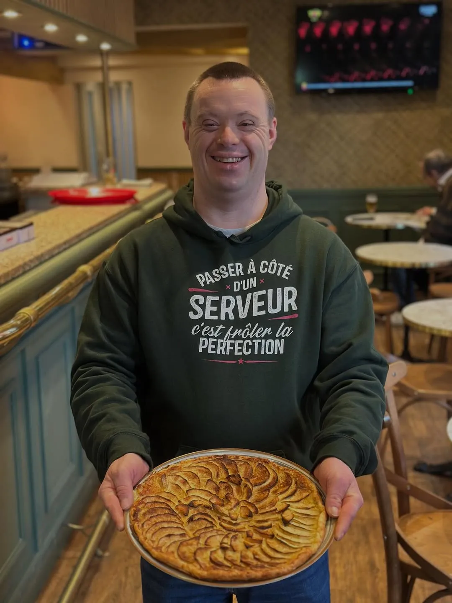
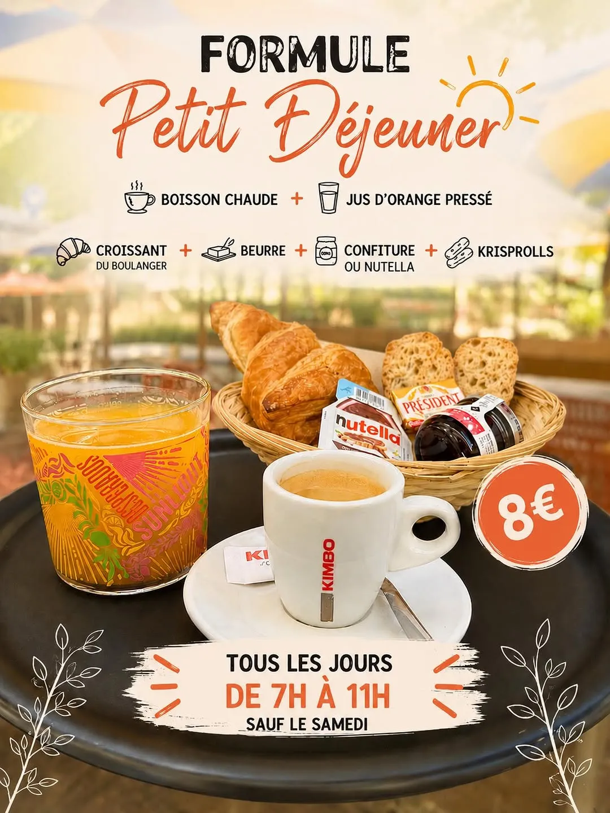

Simple, frais et convivial



Viandes charolaises, frites maison.
Du lundi au samedi


Café, restaurant et glacier, au cœur de Châtillon.
Le café au comptoir dès 6 h 30, la formule du midi, les tapas à partager, une glace en terrasse. Le samedi, jour de marché : huîtres fraîches et le p’tit blanc.

Viandes charolaises, frites maison.
Du lundi au samedi
Le midiEn entréeAperol SpritzLe glacierChiffres relevés en novembre 2026, à confirmer avec le République.
Notre Sylvain pose les pieds en cuisine et les mains dans les pommes : une tarte faite avec amour, passion et beaucoup de rigolade.
Les dessertsLes desserts↗Café au comptoir dès 6 h 30.
Formule du lundi au samedi.
Une glace en terrasse.
L’apéro, de 8 h à midi.